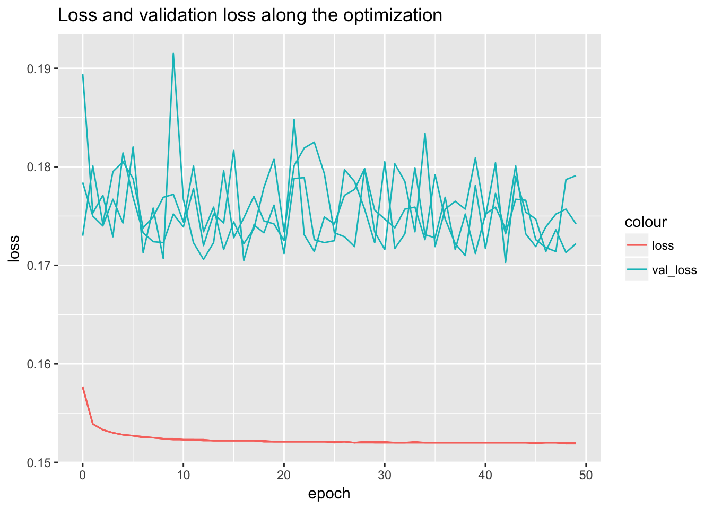
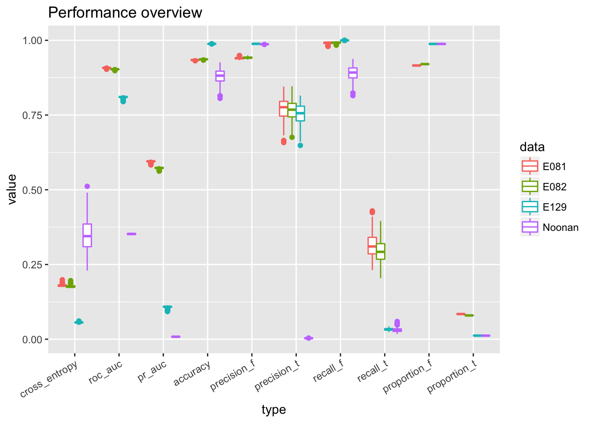
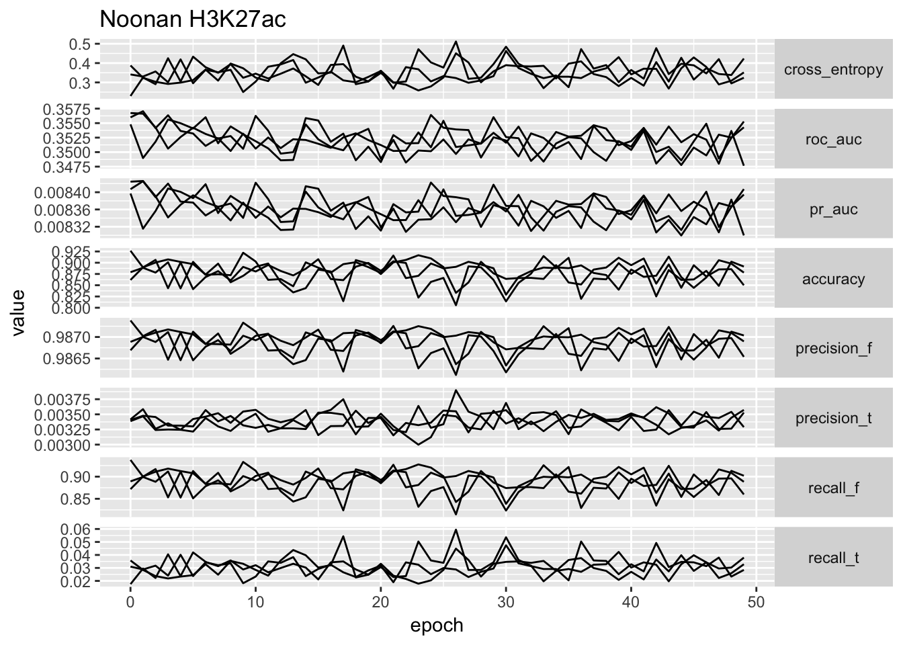
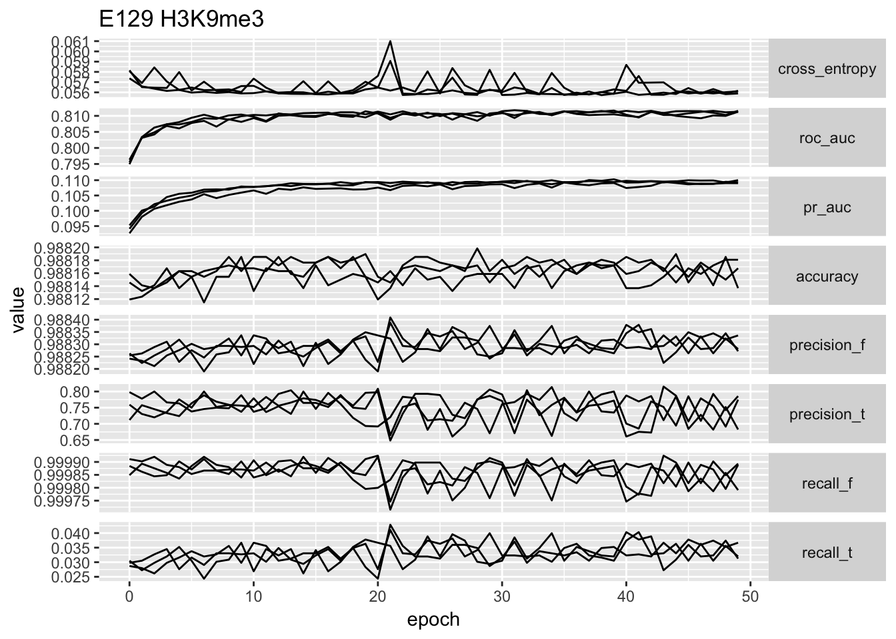
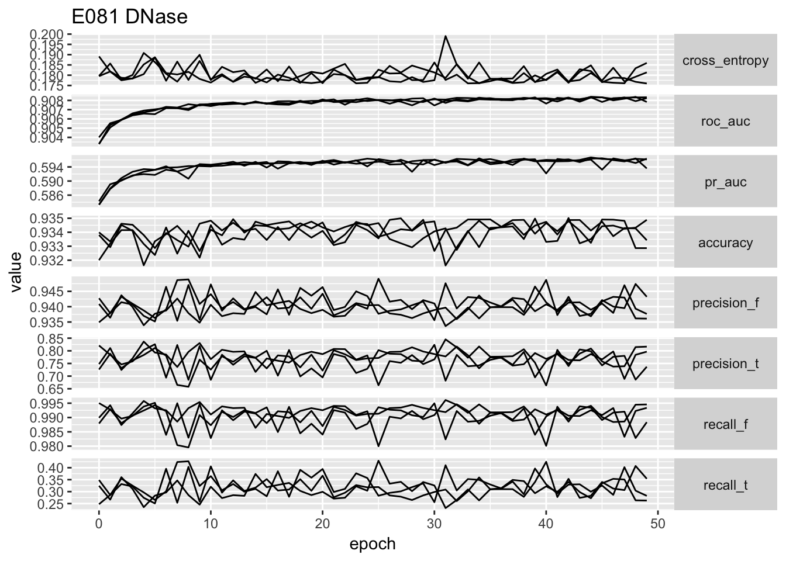
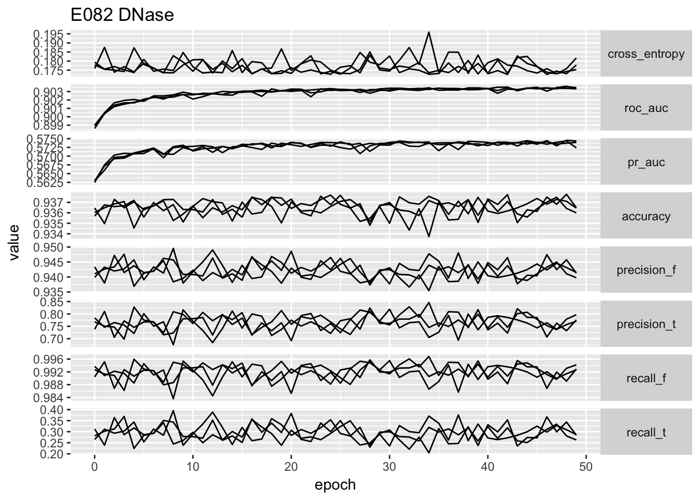
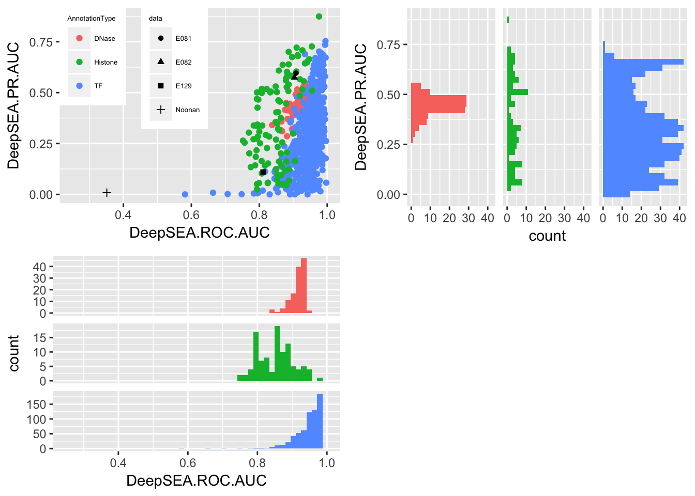

Here we train the model on the basis of DeepSEA result, and particularly:
925-long feature vector for each sequence is computed using script /project2/xinhe/yanyul/deep_variant/yanyu/DeepSEA/my_scripts/run_DeepSEA_keras_feature.py. One of the sbatch script can be found at /project2/xinhe/yanyul/deep_variant/yanyu/deep_brain/my_scripts/train_feature.sbatch. The output data is at:
/project2/xinhe/yanyul/deep_variant/yanyu/deep_brain/DeepSEA_train_12_.hdf5/project2/xinhe/yanyul/deep_variant/yanyu/deep_brain/DeepSEA_valid_12_.hdf5/project2/xinhe/yanyul/deep_variant/yanyu/DeepSEA/my_test/test_all_DeepSEA_keras_12_.hdf5This step is implemented at /project2/xinhe/yanyul/deep_variant/yanyu/deep_brain/my_scripts/wrapper_label_intervals.py. The usage is described in details at here. It also describes how to get the new labels merged with feature representation to get them prepared as input for training script.
This part is implemented by Keras, and in principle, we can add other classifiers by specifying the model generation within /project2/xinhe/yanyul/deep_variant/yanyu/deep_brain/my_scripts/deep_brain_my_lib.py. To make things consistent with DeepSEA, we use logistic regression at present.
Another thing to point out is that we use SGD instead of RMSprop since RMSprop converges more slowly in our problem.
We repeat the training five times and one the scripts used is /project2/xinhe/yanyul/deep_variant/yanyu/deep_brain/my_train/040417_merged/logistic_1.sbatch. Every time, we run 10 epochs and the mini-batch size is 100.
The result is generated by the following command:
$ python my_scripts/summary_run.py my_scripts/ my_train/DeepSEA_test_12__with_label.hdf5 E081,E082,E129,Noonan my_train/040417_merged/1 my_train/040417_merged/2 my_train/040417_merged/3 my_train/040417_merged/4 my_train/040417_merged/5It generates one summary per folder (namely per training). Within each summary file, it contains AUCs, accuracy, precision, recall information computed using test data along the optimization (but loss and val_loss is computed based on train and validation data). The following subsections show the result.
filenames = 1 : 3
summary_table <- c()
for(i in filenames){
temp <- read.table(paste('../../../deep_brain/doc/training/data/040417_overnight/', paste(i, 'txt', sep = '.'), sep = ''), sep = '\t', header = T)
temp$repeatID <- rep(i, nrow(temp))
summary_table <- rbind(summary_table, temp)
}library(ggplot2)
ggplot(summary_table) + geom_line(aes(x = epoch, y = loss, group = repeatID, color = 'loss')) + geom_line(aes(x = epoch, y = val_loss, group = repeatID, color = 'val_loss')) + ggtitle('Loss and validation loss along the optimization')
library(reshape2)
interest_colname <- c('auc', 'accuracy', 'precision', 'recall', 'proportion', 'cross_entropy')
interest.col <- rep(FALSE, length(colnames(summary_table)))
for(i in interest_colname){
interest.col <- interest.col | grepl(i, colnames(summary_table))
}
sub_table <- summary_table[, c('epoch', 'repeatID', colnames(summary_table)[interest.col])]
temp <- melt(sub_table, id.vars = c('epoch', 'repeatID'))
temp$type <- ''
for(i in c('pr_auc', 'roc_auc', 'cross_entropy', 'accuracy', 'precision_f', 'precision_t', 'recall_f', 'recall_t', 'proportion_f', 'proportion_t')){
interest.col <- grepl(i, temp$variable)
temp$type[interest.col] <- i
}
temp$type <- factor(temp$type, levels = c('cross_entropy', 'roc_auc', 'pr_auc', 'accuracy', 'precision_f', 'precision_t', 'recall_f', 'recall_t', 'proportion_f', 'proportion_t'))
temp$data <- ''
for(i in c('E081', 'E082', 'E129', 'Noonan')){
interest.col <- grepl(i, temp$variable)
temp$data[interest.col] <- i
}
ggplot(temp) + geom_boxplot(aes(x = type, y = value, color = data)) + theme(axis.text.x = element_text(angle = 30, hjust = 1)) + ggtitle('Performance overview')
temp.no_proportion <- temp[!grepl('proportion', temp$type), ]
ggplot(temp.no_proportion[temp.no_proportion$data == 'Noonan',]) + geom_line(aes(x = epoch, y = value, group = repeatID)) + facet_grid(type ~ ., scales = 'free_y', ) + ggtitle('Noonan H3K27ac') + theme(strip.text.y = element_text(angle = 0))
ggplot(temp.no_proportion[temp.no_proportion$data == 'E129',]) + geom_line(aes(x = epoch, y = value, group = repeatID)) + facet_grid(type ~ ., scales = 'free_y', ) + ggtitle('E129 H3K9me3') + theme(strip.text.y = element_text(angle = 0))
ggplot(temp.no_proportion[temp.no_proportion$data == 'E081',]) + geom_line(aes(x = epoch, y = value, group = repeatID)) + facet_grid(type ~ ., scales = 'free_y', ) + ggtitle('E081 DNase') + theme(strip.text.y = element_text(angle = 0))
ggplot(temp.no_proportion[temp.no_proportion$data == 'E082',]) + geom_line(aes(x = epoch, y = value, group = repeatID)) + facet_grid(type ~ ., scales = 'free_y', ) + ggtitle('E082 DNase') + theme(strip.text.y = element_text(angle = 0))
# ggplot(temp) + geom_point(aes(x = cross_entropy, y = roc_auc)) + facet_wrap(~data, scales = 'free')From the performance curves we can see that the present feature representation works well on E081, E082 DNase data but it works really poorly on Noonan’s H3K27ac data. First of all, the bad performance is hardly due to optimization issue, because we have run 50 epochs and other data sets have reached a reasonable performance. We select the one with lowest validation loss as the best model for down stream analysis.
best_model <- summary_table[order(summary_table$val_loss, decreasing = F)[1],]
print(best_model)## epoch loss val_loss accuracy.E081 accuracy.E082 accuracy.E129 accuracy.Noonan cross_entropy.E081 cross_entropy.E082 cross_entropy.E129 cross_entropy.Noonan pr_auc.E081 pr_auc.E082 pr_auc.E129 pr_auc.Noonan precision_f.E081 precision_f.E082 precision_f.E129 precision_f.Noonan precision_t.E081 precision_t.E082 precision_t.E129 precision_t.Noonan proportion_f.E081 proportion_f.E082 proportion_f.E129 proportion_f.Noonan proportion_t.E081 proportion_t.E082 proportion_t.E129 proportion_t.Noonan recall_f.E081 recall_f.E082 recall_f.E129 recall_f.Noonan recall_t.E081 recall_t.E082 recall_t.E129 recall_t.Noonan roc_auc.E081 roc_auc.E082 roc_auc.E129 roc_auc.Noonan repeatID
## 98 42 0.152 0.1703 0.9350144 0.9377308 0.9881764 0.8534847 0.1766438 0.1726692 0.05577477 0.4050382 0.5959237 0.5739725 0.1096065 0.008351041 0.9432059 0.9464504 0.9882891 0.9865748 0.7397948 0.7224167 0.7692308 0.003247491 0.9157011 0.9204174 0.9878995 0.9879523 0.08429885 0.07958262 0.01210046 0.01204772 0.9885568 0.988262 0.9998799 0.8634477 0.3534074 0.3533083 0.03269161 0.03648303 0.9081807 0.9035268 0.8112457 0.3512936 2temp_dcast <- dcast(temp, epoch + repeatID + data ~ type)
best_model_melted <- temp_dcast[temp_dcast$epoch == best_model$epoch & temp_dcast$repeatID == best_model$repeatID,]
write.table(best_model_melted, file='../data/best_model_type1_scores.txt', sep = '\t', row.names = F, quote = F)source('../../../deep_variant/DeepSEA/doc/cell_type/yanyu_lib.R')
library(stringr)
aucs_danq <- read.table('../../../deep_variant/DeepSEA/doc/DeepVariantAnnotation/data/aucs.txt', sep = '\t', header = T)
aucs_danq <- as_num(aucs_danq)## Warning in as_num(aucs_danq): NAs introduced by coercion
## Warning in as_num(aucs_danq): NAs introduced by coercionaucs_danq <- aucs_danq[!is.na(aucs_danq$DeepSEA.ROC.AUC),]
aucs_danq$AnnotationType <- to_annotation_type(aucs_danq$TF.DNase.HistoneMark)
temp_data <- aucs_danq[aucs_danq$AnnotationType == 'DNase',]
p1<-ggplot(aucs_danq) + geom_histogram(aes(x = DeepSEA.ROC.AUC, fill = AnnotationType), bins=50) + facet_grid(AnnotationType~., scales = 'free_y') + theme(strip.background = element_blank(), strip.text.y = element_blank(),legend.position="none") + scale_x_continuous(limits=c(0.25, 1))
p2<-ggplot(aucs_danq) + geom_histogram(aes(x = DeepSEA.PR.AUC, fill = AnnotationType), bins=30) + facet_grid(.~AnnotationType, scales = 'free_y') + coord_flip() + theme(strip.background = element_blank(), strip.text.x = element_blank(), legend.position="none")
p3<-ggplot() + geom_point(data = aucs_danq, aes(x = DeepSEA.ROC.AUC, y = DeepSEA.PR.AUC, color = AnnotationType)) + theme( legend.box = "horizontal", legend.justification=c(0,1), legend.position=c(0,1), legend.text=element_text(size=5), legend.title=element_text(size=5)) + geom_point(data = best_model_melted, aes(x = roc_auc, y = pr_auc, shape = data)) + scale_x_continuous(limits=c(0.25, 1))
multiplot(p3, p1, p2, cols=2)## Warning: Removed 3 rows containing missing values (geom_bar).
It shows that the result of E081, E082 are compatible to the DNase result in DeepSEA. E129 which is one of the data set in DeepSEA, it achieves similar result as DeepSEA one. But the H3K27ac data behaves poorly, which indicates that the feature representation is not suitable for this data. Another issue is that it is possible that the poor performance data sets have a more unbalanced label set. TODO show that!